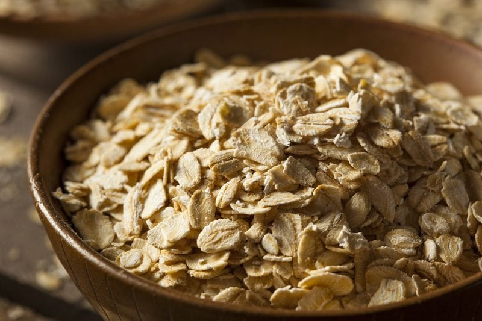
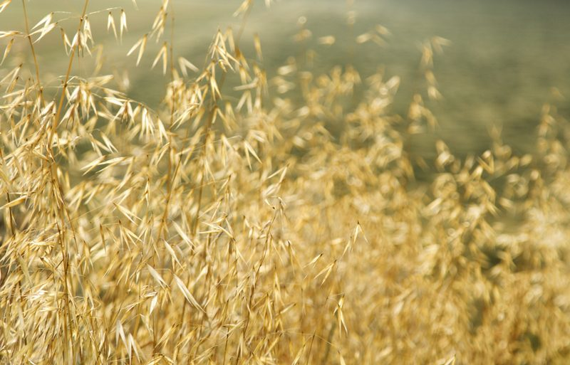

Oats – Are they Gluten-Free?
Can people diagnosed with Celiac Disease or Gluten Intolerance eat OATS?
Some studies suggest they can be raw, and others say they can’t. So who is right? The short answer is, they both are. Do you remember growing up, and perhaps your mother or a loved one said to you, “It’s whats on the inside that counts, not what’s on the outside?” With today’s topic, we need to rearrange a few words, because when it comes to oats, “It’s whats on the outside that counts, not on the inside.”!

Let me explain…
Oats do not contain the protein gluten the way wheat, barley, and rye do. So, if oats do not contain gluten, why should a person with Celiac Disease need to avoid oats? There are two reasons.
First, oats are often grown in close proximity to wheat and barley, both of which contain gluten. Also, farmers rotate their fields, so oats are commonly grown in the same soil wheat and barley have been grown on. Farmers also use the same equipment on the oat, wheat and barley crops.
This creates cross-contamination.
So even though gluten is not found in the oat, it can be on it, which can be just as harmful to a person with Celiac Disease. If oats were grown completely away from wheat and barley and farmers dedicated their equipment to only the oat fields, they should be gluten-free. It is possible to buy “uncontaminated’ oats from vendors who ensure their oats have not come into contact with gluten. But that does not mean that every person with Celiac Disease can start eating “uncontaminated” oats.
Sensitivity to Avenin
The second reason a person with Celiac Disease (or others) may need to avoid oats is that they may also have a sensitivity to avenin, the protein found in oats. Numerous studies have shown that many people with a sensitivity to gluten also have a sensitivity to avenin. Thus, when pure oats are consumed, they still exhibit the same symptoms as if they had eaten gluten. (source)
The bottom line talks to your healthcare professionals if you want to add oats to your diet. Most health care professionals recommend having your Celiac Disease under control before even attempting to add oats. Even then, they recommend eating just a small amount. The key is to make sure you are closely monitored.

Resources for GF Oats:
Red Mill Oats – gluten-free but not raw
- Our Gluten-Free Quick Oats are pure. They are grown by over 200 farmers on clean, dedicated oat-growing fields. They plant only “pedigreed” seed stock. Each farm delivery is sampled hundreds of times and tested with an R5 ELISHA gluten test to ensure the absence of gluten. Advanced color-sorting removes undetected impurities. Roasting enhances the wholesome, robust flavor you expect. The oats are packaged in our 100% gluten-free facility and tested for gluten again to ensure their purity.
Prairie Oats – gluten-free but not raw
- Because our Gluten-Free Prairie Oat is naturally hull-less, it requires minimal processing and has not been soaked or steamed. Bonus: there is no hull debris to remove before packaging. Additionally, we’ve been impressed with their 18-month shelf-life. (Possibly due to the lower moisture content)
- This new variety of hull-less oats, developed at Montana State University, is also higher in protein than many other varieties. Most oats are approx. 13% protein, while Gluten-Free Prairie Oats consistently test out between 17 & 22% protein.
Blue Mountain Organics
“Montana Gluten-Free Raw Oatmeal is the only raw rolled oatmeal produced in North America. These oats have a wonderful flavor, more nutrition, and longer shelf life than conventional wet-milled, pre-cooked oatmeal. Most oatmeal manufacturers steam the oats to remove the hulls, then roll or cut them, and finally heat them again to remove the moisture. As Montana Gluten Free’s special variety of oats are naturally hull-less, they need no special treatment before rolling. No steaming, steeping, or cooking is required in the unique process. In these dry rolled oats, the enzymes are alive, and the oatmeal is deliciously one of a kind.“
Through the research that I have done over the years regarding oats… I feel that it is of vital importance that we soak them before using them. Please click (here) to learn how.
© AmieSue.com